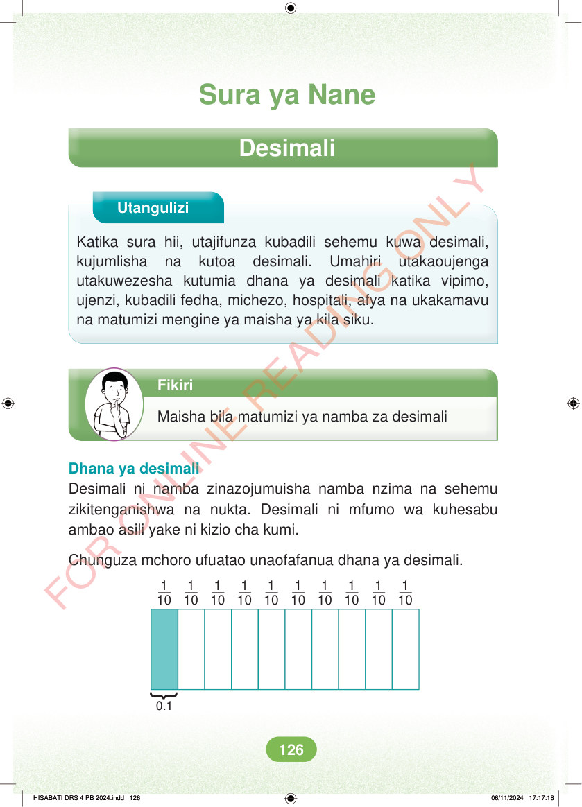

Sura ya Nane Desimali Utangulizi Katika sura hii, utajifunza kubadili sehemu kuwa desimali, kujumlisha na kutoa desimali. Umahiri utakaoujenga utakuwezesha kutumia dhana ya desimali katika vipimo, ujenzi, kubadili fedha, michezo, hospitali, afya na ukakamavu na matumizi mengine ya maisha ya kila siku. Fikiri Maisha bila matumizi ya namba za desimali Dhana ya desimali Desimali ni namba zinazojumuisha namba nzima na sehemu zikitenganishwa na nukta. Desimali ni mfumo wa kuhesabu ambao asili yake ni kizio cha kumi. Chunguza mchoro ufuatao unaofafanua dhana ya desimali. 1 10 1 10 1 10 1 10 1 10 1 10 1 10 1 10 1 10 1 10 } 0.1 HISABATI DRS 4 PB 2024.indd 126 HISABATI DRS 4 PB 2024.indd 126 06/11/2024 17:17:18 06/11/2024 17:17:18